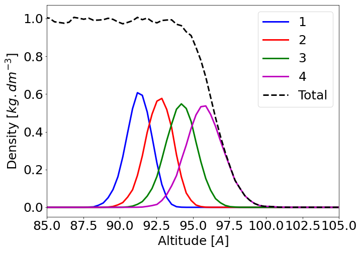

5.1. How to create Diagram?¶
5.1.1. Declare diagrams¶
To declare a new analysis for a MT, a diagram should be declared using:
input_for_diagram_1 = ['density', 'Plane_xy', 100]
input_for_diagram_2 = ['molecular_orientation', 'Plane_xz', [50, 100], 'independent']
L_diagram_analysis_to_perform=[input_for_diagram_1, input_for_diagram_2]
moleculetype.read_diagram_input(GP, L_diagram_analysis_to_perform)
The read_diagram_input function takes as first argument the GlobalParameter of the calculation, and as second argument the list containing the user-input for every diagram – L_diagram_analysis_to_perform. An extra optional argument can also be added, see bellow.
Each element of the L_diagram_analysis_to_perform list defines the parameter for one diagram. The order does not matter. The standard shape have at least 3 parameters:
[analysis_type, geometrical_discretization, [N], ...]
Where ‘analysis_type’ is one of the analysis available (‘density’ or ‘alpha’ for instance: no capital letter), ‘geometrical_discretization’ is the discretization (‘Averaged’ or ‘Plane_xy’ for instance, see bellow) and ‘N’ refers to the bin number used for the geometrical discretization. In all the documentation, ‘N’ refers always to the geometrical discretization, and is always the first element of the list defined as the third argument. For instance, the first diagram input in the previous example:
input_for_diagram_1 = ['density', 'Plane_xy', 100]
declares a density analysis, with geometrical discretization along the laboratory z-axis. 100 bin are used to discretised this z-axis. More parameters and bin number can be set after this minimal basis. For instance:
input_for_diagram_2 = ['molecular_orientation', 'Plane_xy', [50, 100], 'independent']
declares a ‘molecular orientation’ analysis, with geometrical discretization along the laboratory y-axis. 50 bin are used to discretised this y-axis. The independent probability distribution will be computed for the molecular orientation – see the molecular orientation diagram documentation for more information. 100 bins are used to discretize each molecular orientation dimension. For the case of water, 3 angle represents the molecule’s orientation. The final diagram will be a list of size 100x50x50x50.
To sumarize: the third argument is a list containing the bin number for each discretization: [N, M1, M2…]. The first number N allways refers to the geometrical discretization, defined by the second argument geometrical_discretization. The other number are used to discretize the observable relative to the analysis required and depends on the analysis type. See the analysis available page for more informations.
For concrete example of how the discretization is performed, see bellow or here.
Note
The parameters relative to a diagram generated by the moleculetype.read_diagram_input function is stored in a single diagram parameter object.
Given the previous arguments, the name of the diagramm is constructed. The name of any diagram starts with the analysis type, then the discretization of the space and finally other properties depending of the analysis type. For instance, the diagram obtained with the input [‘density’, ‘Plane_xy’, [100]] will have the name density_slice_z, the diagram with input [‘molecular_orientation’, ‘Averaged’, [1, 45]] will have the name molecular_orientation.
Note
For the optical analysis, the name can be also update later on depending on the optical parameter set.
You may define several diagram of the same analysis for a given MT as long as the diagram name are different. For instance, for a ‘molecular orientation’ analysis, you can define an ’Averaged’ diagram and one discretized in space:
input_for_diagram_1 = ['molecular_orientation', 'Averaged', [1, 180], 'independent']
input_for_diagram_2 = ['molecular_orientation', 'Plane_xy', [50, 45], 'independent']
The first diagram name is molecular_orientation, and the second molecular_orientation_slice_z. In this case, the first one will have very hight discretization of the observable (180 bin), and will give a nice distribution for all the molecule in the box. The second shows how the molecular orientation evolve along the laboratory z-axis.
Warning
If you declare 2 times a diagram with the same name, problems may (very probably) happens. There is a safeguard to prevent this.
In the following is presented how the geometrical selection works in details.
5.1.2. Geometry selection¶
To define every diagram, you have to set the geometric selection type, i.e. the second argument of every diagram declaration:
L_diagram_analysis_to_perform = [[analysis_type, geometrical_discretization, bin, other parameters...], ...]
moleculetype.read_diagram_input(GP, L_diagram_analysis_to_perform, special_selection=False)
The geometrical_discretization can have the value:
‘Averaged’
‘Plane_ij’
‘Layer’
and are explained bellow. If you want to refine your geometrical discretization, you can use the special_selection option.
5.1.2.1. Averaged¶
If you do not want to have all the molecule of the MT contributing indistinguishibly use the ‘Averaged’ input. Then, the mean and the distribution of this analysis will be made over all the molecule available. In the code and in this doc, this configuration is often refers to ‘no geometrical selection’ or ‘no space-discretization’.
This case is used for bulk simulation for instance.
5.1.2.2. Plane¶
If you want to discretize over a given axis of the laboratory frame, use the ‘Plane_ij’ selection – where i,j are x,y,z. The ‘Plane_ij ‘options means that space discretization along one axis is done. For instance, if ’Plane_yz’ is set, an extra discretization with respect to the molecule’s mean position along the x-axis is done. Note that the discretization is done with respect to the box size of every time step.
In this example:
L_diagram_analysis_to_perform = [
['chi', 'Averaged', [1, 100], [-15, 15]],
['chi', 'Plane_xy', [100, 50], [-10, 10]],
]
moleculetype.read_diagram_input(GP, L_diagram_analysis_to_perform)
2 diagrams with the same total information are created, but with not the same distribution parameters. The chi analysis represent 3x3x3 matrices, and are stored using 27 elements.
The first diagram contains the information of all the molecule in the MD box. Its name is ‘chi’ 100 bins is used to discretized each chi components and the discretisation of each component is made between the value -15 and 15 a.u. . Each bin correspond to an extention of 0.3 a.u. . The distribution (value attribute of the diagram) is a 27x100 array. mydiagram.value[4][0] contains how many molecule has its 5th chi components between -15 and -14.7 a.u. . The mean value is an array with 27 elements. mydiagram.mean[1] is the mean value of the second chi component.
The second diagram contains the information of all the molecule in the MD box, but discretized along the z laboratory axis. Its name is ‘chi_slice_z’. The individual chi value of the molecule contribute to a specific part of the distribution according to the molecule’s position along the z-axis. Here, 100 bin are used to discretized this z-axis. The size of the bin depends on the MD box-size (updated for every time step). These bin are often called ‘altitude’ in the rest of the documentation. The total number of molecule which have participated to a given ‘altitude’ in the general case be obtained by summing over all the other bin for a given altitude – see below for example. Moreover, in most of the analysis, the mean value are also computed. This axis_population attribute contains directly the number of molecule which have contributed to this altitude.
As for the first diagram, the discretization over the chi element value is also performed: 50 bins are used. The discretisation of each component is made between the value -10 and 10 a.u. . Each bin correspond to an extention of 0.4 a.u. . The distribution (value attribute of the diagram) is a 100x27x50 array. mydiagram.value[5][4][0] contains how many molecule has its 5th chi components between -10 and -9.6 a.u. and their mean position within the 6th altitude. For example, if the MD box size along the z-direction is 100 A, it correspond to molecule within 5 and 6 A along the z-direction. The mean value is an 100x27 array. mydiagram.mean[5][1] is the mean value of the second chi component for the molecule within the 6th altitude.
Note
The altitude attribution is made over each frame. Both the position of the molecule at each time step and the MD box size are updated.
To plot the results, an axis_space is created: it contains the altitudes values expressed in angstrom. For instance, if you want to plot the mean value of the chi third component along the z-axis:
plt.plot(my_diagram..axis_space.value, my_diagram.mean.T[2])
See this page for more information about ploting diagrams.
5.1.2.3. Layer¶
General informations:
Note
Je commence par expliquer en quoi la description par layer est interressante. J enfonce peut etre des portes ouvertes, au pire cette explication servira aussi pour autre chose que je devrait ecrire!
Using the molecule position with respect to the laboratory frame is unambigious, but may not be the best space-description possible. Indeed, what is important is not the position of the molecule in the box, but the position of the molecule with respect to the interface. In some cases, the interface landscape can flucutates, for instance in liquid-vapor interfaces due to thermal effects, and this distance can be hard to compute.
A new standard is to describes the molecule by layers. Indeed, for the most external part of the interface, the molecule’s characteristics can be more accuretly described using the molecule layer then the molecule position with respect to the interface. Bellow is presented for the water at the liquid-air interface (TIP4P/2005 force field, 300K) the population of the different ‘layer’ with respect to the laboratory out-of-plane direction. In black the total density, the larger the layer number, the more external is the molecule.
{kind=link}
The total density close to the interface follows a tanh shape. The differents ‘layers’ cover few angstrom and overlaps. Note that for an solid-liquid interface, the layer would overlap less and the more external one would be closer to a dirac. The widith of each layer and the overlaping are due to thermal fluctuations of the interface. Therefore, if for some system the molecule absolute position and its layer give the same information (solid-liquid interfaces for instance), in the general case the layer attribution can provide a finner molecule-oriented description.
Note
In  may not have to choose: you can use both!
may not have to choose: you can use both!
In , it is made possible by the use of the module pytim. ADD REF. Here is explained briefly how to use this module within , but for more information, we warmly recommand to see the original pytim documentation. ADD REF. This method aims to define for an MD frame the interfaces, and for each interface the different layer: from the most external one to the almost bulk like.
Warning
The layer attribution has been tested only for 2D liquid-vacuum interfaces where there are only 2 interfaces. If you are using other type of interfaces please contact us. We are quite confident that it would work for other types of interface, but some numerical adjustment may be needed.
In practice:
As for the other type of space-discretization, you should use ‘Layer’ and declare the number of layer you want to use for each interfaces:
L_diagram_analysis_to_perform = [
['chi', 'Layer', [3, 50], [-10, 10]],
]
moleculetype.read_diagram_input(GP, L_diagram_analysis_to_perform)
Here, a diagram with name ‘molecular_orientation_layer’ is created. The size of the diagram is 7x3x50. The 7=2*3+1 is used to discretize over the layer. The first 3 elements are the layers of the bottom interface, the 4th element stands for the bulk-like phase, and the last 3 elements are the layers of the upper interface. In , the layer number can be negative or positive for the bottom and upper interface respectively. The more the layer number is away from 0, the more the laye is far from the bulk-like phase. The other dimension of the diagram are given independently of the space-discretization.
Note
for more information about how the layer value are stored for each molecule, see the singlemolecule attribute layer
If several layer discretization type are required, a attribute, GP.layer_nbr_max tracks the maximal layer number declared – acrros all over the declaration: diagrams, QM calculation or other MTs. The layer attribution for each molecule is done once using this GP.layer_nbr_max value. For the diagrams, the layers are reassigned properly.
Example:
L_diagram_analysis_to_perform = [
['beta', 'Layer', [2, 50], [-10, 10]],
['chi', 'Layer', [4, 50], [-10, 10]],
]
moleculetype.read_diagram_input(GP, L_diagram_analysis_to_perform)
In this example (assuming that no other layer space-discretization are set elsewhere), GP.layer_nbr_max = 4. Therefore, each molecule layer number go from -4 to 4. 0 being the ‘bulk-like’ attribution. For the chi diagram space-discretization, the attribution is straightforeward since the number of layer used matches GP.layer_nbr_max.
For the beta diagram, the discretization is smaller then the GP.layer_nbr_max. For the upper interface for instance, there are 4+1 layers values (+4, +3, +2, +1 and 0, 0 being the bulk like phase) possible for every molecule. But, for the beta diagram, only 2+1 value are required (+2, +1 and 0). Therefore, a reasignation is needed. The most inner layers are thus considerated as ‘bulk’, to keep the outter ones in the discretization. In this example, a molecule with layer assigment +4 is assigned in the diagram as +2, +3 becomes +1, and +2 or +1 becomes 0.
In other words, the most outter layers are considerated as the most important: there are always the first and last element (for the bottom and upper interface respectively) of the space-discretization in the case of layer.
An important parameter for the layer attribution is the VDW radius used by pytim. The ways it is handle by is described in the attribute definition used to set the method: GP.layer_which_radii_MT. In short:
GP.layer_which_radii_MT = ‘MD’: the VDW radius are guessed from the MD simulation.
GP.layer_which_radii_MT = ‘MT’: the VDW radius are defined for each MTs using the molecular library files.
GP.layer_which_radii_MT = mydict: where mydict is a user-defined dictionary defining the radii.
For more information, see the https://marcello-sega.github.io/pytim/guessing_radii.html pytim documentation page.
Finally, see the tutorial TODO for pratical example of the layer attribution uses.
5.1.2.4. Special selection¶
The phylosophy:
For interfaces analysis, in fact most of the system is not of primor interest. Indeed, the bulk-like phase built during the MD is not the part where the observable are often made. Therefore, in , 2 options have been made to reduce the computation time and to help focus on the relevent part. One is this specital selection acting on the diagram analysis level, and the other is the optical option TODO – which determines which molecule should be QM-treated.
All the molecule of the MD simulation shall be assigned to an MT: some analysis may required to built neigborhood up to several nanometers and indistinguishably of the MT neigbors type. This special selection set for each MD frame and for a given MT which molecule should be analysis using the diagram declared for this MT. The selection is made over the usual space-discretization type keywords and options. Indeed, no matter what the position of each molecule (and the layer if any layer discretization is required) are computed for each frame.
If a molecule does not match the special requirement at a given time step, the analysis for this molecule will not be perfromed, and thus the diagram will not be impact by this molecule.
Pratical use:
An example of the special selection use:
L_diagram_analysis_to_perform = [
['density', 'Plane_xy', [100]],
['density', 'Plane_yz', [100]],
['beta', 'Averaged', [1, 50], [-10, 10]],
['chi', 'Layer', [4, 50], [-10, 10]],
]
special_selection = [’Plane_xy’, 100, [50, 63, 64]]
moleculetype.read_diagram_input(GP, L_diagram_analysis_to_perform, special_selection=special_selection)
The special selection acts as a Plane space discretization: each molecule’s position is discretize along it z-laboratory axis value using 100 bins. If the obtained bin number is 50, 63 or 64, all the analysis are performed. If not, no analysis is performed for this molecule and all the diagram are not update.
Note
This procedure is repeated each time step. The molecule of the MTs which participate to the analysis are stored in myMT.mtparameter.dparameter.L_allowed_molecule<autodoc_diagramparameter_L_allowed_molecule>.
The diagram are impacted differently according to theire space-discretization. If there space discretization is different, then the diagram size is not changed. For the Averaged one, like the beta analysis, the population is reduced. But since no space discretization is used here, it is as if the MD simulation have been reduced to a smaller part.
Note
An input like: moleculetype.read_diagram_input(GP, [[‘beta’, ‘Averaged’, [1, 50], [-10, 10]]], special_selection = [’Plane_xy’, 100, [50]]) will return the same information as the 50th bins of an input like: moleculetype.read_diagram_input(GP, [[‘beta’, ‘Plane_xy’, [100, 50], [-10, 10]]], special_selection = False)
For the Plane discretization with different axis or layer, the diagram size is not changed. The population participating to each bin will be different.
Note
An input like: moleculetype.read_diagram_input(GP, [[‘density’, ‘Plane_xy’, [100]]], special_selection = [’Layer’, 4, [4]]) shows the density along the z-axis of the layer 4.)
For the Plane discretization with the same axis, the diagram size is set to match with the authorised one. Indeed, in this case can knows which bin will be by definition not used. In this case, the diagram.space_axis will also be update to match with the new assignment. In this case, the density_slice_z diagram will have only 3 bins, describing the 50th, 63th and 64th absolute altitudes.
Note
This option is also handy to reduce the size of the diagrams, meaning less memory-demanding.
Here is breifly described all the possible argument of the special_selection:
No selection: Just set the special_selection to False, or do not set it at all as it the default value.
Plane: special_selection = [’Plane_ij’, bin_number, lis_of_authorised_bin], where i, j are x, y, z. The bin_number is the number of bin used to discretize the k-laboratory axis. The lis_of_authorised_bin defines which bin should be treated.
Layer: special_selection = [’Layer’, layer_number, list_of_authorised_layer], where layer_number is the number of layer to attribute per interface. The list_of_authorised_layer can go from -layer_number to +layer_number. For more information about the layer attribution behaviour, see the previous section about the layer type space-discretization.
For more complete information about the special selection, see the relative attributes in the diagram parameter object: spcial_selection.
Todo
finir d ecrire les L_reassignation_selection et real_space_discretization_bin_number dans le diagram structure (cf python les derniers objects de SingleDiagramParameter).
Todo
verifier que le L_allowed_molecule est bien documente dans le diagram structure, pareil pour le spcial_selection
5.1.3. Optical Analysis¶
To conclude this page, in is defined two different types of analysis: “structural” and “optical”. The structural ones demand only the MD trajectory as input, whereas “optical” ones also demand additional inputs – mainly to perform QM calculation. In more details : the analysis ’density’, ’molecular_orientation’, ’hbond’, ’rdf’ and ’electric_field’ are “structural” while ’alpha’, ’iota’, ’beta’, ’chi’ are ’optical’. The procedure to initialize the “structural” properties are defined in the available analysis page, while the “optical” ones demand more parameters, described Here.